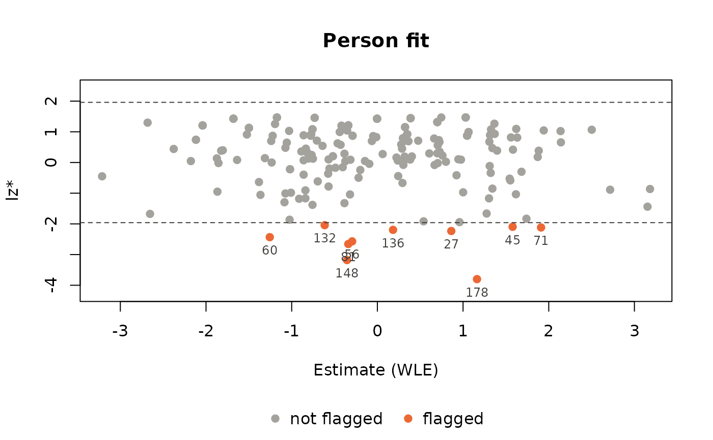

PPass (Person Parameter assessment) estimates the person parameters and computes the person fit in one call, and returns both in one table, next to the other person variables. It takes a data.frame or matrix with item responses and known item parameters, or a model fitted with the eRm package.
Usage
PPass(...)
# Default S3 method
PPass(
respdf,
items = "all",
fitindices = c("lz", "lzstar", "infit", "outfit"),
SE = FALSE,
...
)
# S3 method for class 'eRm'
PPass(
RMobj,
fitindices = c("lz", "lzstar", "infit", "outfit"),
SE = FALSE,
...
)
# S3 method for class 'ppass'
print(x, n = 10, digits = 3, ...)
# S3 method for class 'ppass'
summary(object, alpha = 0.05, digits = 3, ...)
# S3 method for class 'ppass'
as.data.frame(x, row.names = NULL, optional = FALSE, ...)Arguments
- respdf
A data.frame or matrix with one row per person, which contains the item responses and possibly other person variables.
- items
The item columns of
respdf:"all"(default), their positions or their names.- fitindices
The person fit indices to compute, any of
"lz","lzstar","infit"and"outfit"(default all).- SE
If
TRUE, jackknife standard errors of the fit indices are added (seePfit()).- RMobj
A model fitted with the
eRmpackage (RM(),LLTM(),RSM(),PCM(),LRSM()orLPCM()).- x, object
A result of
PPass().- n
Number of persons to print.
- digits
Number of significant digits to print.
- alpha
Significance level for flagging persons: \(|z| > z_{1-\alpha/2}\) for lz*, lz,
in_torou_t(the first one computed).- row.names, optional
Ignored.
- ...
Arguments for the estimation: the item parameters (
PPass.defaultonly) andtype,mu,sigma2,theta_start,range,maxsteps,exac,Handverbose, seePP_4pl(),PP_gpcm()andPPall(). The default estimate is WLE.
Value
A data.frame of class ppass with one row per person: the person variables (the columns of respdf that are not items; for eRm models with groups the column group), estimate, SE and status of the estimate (see PP_4pl()) and the columns of the chosen person fit indices (see Pfit()). It can be used like any data.frame. The estimation object is kept as attribute, so JKpp() and PV() can be applied to the result directly; print() and summary() show an overview with the persons flagged by the person fit, plot() draws the person fit map, the measurement precision or person profiles (see pp-plots), and as.data.frame() returns a plain data.frame.
Details
Data with item parameters (PPass.default): the columns items of respdf are the responses, the other columns are kept as person variables. The item parameters are passed in ... (thres, slopes, lowerA, upperA), and the model follows from them: thres alone gives the 1PL model, with slopes the 2PL, with lowerA the 3PL and with upperA the 4PL model, estimated with PP_4pl(). A threshold matrix with more than one threshold for some item gives the partial credit model (all slopes 1) or the generalized partial credit model, estimated with PP_gpcm(). With such polytomous items and lowerA or upperA, the test is a mixed test (items with one threshold are 4PL items), estimated with PPall(). The arguments mod and model2est of earlier versions are no longer needed; they are ignored with a warning.
eRm models (PPass.eRm): all models of the eRm package are supported, the Rasch model (RM), the linear logistic test model (LLTM), the rating scale model (RSM), the partial credit model (PCM) and the linear models LRSM and LPCM, also with several time points (mpoints) and groups (groupvec). The responses and item parameters come from the fitted object. eRm stores easiness parameters per category, \(\beta_{ih} = -\sum_{k \le h} \delta_{ik}\); they are turned into the thresholds \(\delta_{ih} = \beta_{i,h-1} - \beta_{ih}\), so for the dichotomous models the difficulty is \(-\beta_i\). With time points or groups every combination of item, time point and group is a virtual item with its own parameters; a person answers the virtual items of their group, and gets one ability over all time points. The person parameters are estimated with PP_4pl() (RM, LLTM) or PP_gpcm() with all slopes 1. The maximum likelihood estimates (type = "mle") equal those of eRm::person.parameter(); unlike eRm, PPass also gives estimates for models with group contrasts, and WLE, MAP, EAP and robust estimates, person fit, jackknife and plausible values. The eRm package is not needed to run PPass on such an object.
Person fit is computed by Pfit() and needs an estimate of type "mle", "wle" or "map". For type = "eap" and "robust" PPass returns the estimates only, with a message.
Examples
## data with item parameters
set.seed(1337)
# difficulties and slopes of 15 items
diffpar <- seq(-3, 3, length = 15)
sl <- round(runif(15, 0.5, 1.5), 2)
# responses of 200 persons, plus an id and a group variable
awm <- sim_4pl(beta = diffpar, alpha = sl, lowerA = rep(0, 15), upperA = rep(1, 15),
theta = rnorm(200))
dat <- data.frame(id = 1:200, group = rep(c("a", "b"), 100), awm)
# 2PL, WLE estimates and all person fit indices; id and group are kept
res <- PPass(dat, items = 3:17, thres = diffpar, slopes = sl)
res
#> Person assessment: 200 persons, 15 items
#> Model: 2PL model | WLE estimates
#> Status: 200 ok
#> Person fit: lz, lzstar, infit, outfit
#> Flagged (|lzstar| > 1.96): 10 persons
#>
#> id group estimate SE status lz lzstar infit in_t outfit ou_t
#> 1 1 a -2.0396 0.813 ok 1.117 1.207 0.575 -1.327 0.327 0.8141
#> 2 2 b 1.6821 0.644 ok -0.287 -0.302 1.091 0.371 1.026 0.4198
#> 3 3 a -1.0733 0.745 ok -0.974 -1.009 1.415 1.262 1.027 0.5614
#> 4 4 b 0.7229 0.674 ok 0.664 0.667 0.790 -0.494 0.526 -0.4597
#> 5 5 a -1.0194 0.742 ok -0.204 -0.219 1.132 0.504 0.773 0.3673
#> 6 6 b 1.8830 0.650 ok 0.375 0.384 0.914 -0.131 0.553 0.0378
#> 7 7 a -0.0138 0.704 ok 0.826 0.826 0.728 -0.769 0.480 -0.4764
#> 8 8 b 2.7165 0.728 ok -0.613 -0.887 1.033 0.222 2.376 1.1775
#> 9 9 a -1.0248 0.742 ok -1.817 -1.864 1.257 0.857 5.145 1.9063
#> 10 10 b -0.7728 0.729 ok 0.913 0.915 0.694 -1.000 0.465 -0.0684
#> ... 190 more persons
#> Not shown: lz_unst, in_chisq, in_df, in_pv, ou_chisq, ou_df, ou_pv
summary(res)
#> Person assessment: 200 persons, 15 items
#> Model: 2PL model | WLE estimates
#> Status: 200 ok
#> Person fit: lz, lzstar, infit, outfit
#> Flagged (|lzstar| > 1.96): 10 persons
#>
#> Estimates (status ok):
#> Min. 1st Qu. Median Mean 3rd Qu. Max.
#> -3.2128 -0.8399 -0.0792 -0.0505 0.7321 3.1820
#>
#> Person fit:
#> statistic n mean sd min max flagged
#> lz 200 0.237 1.018 -3.782 1.46 10
#> lzstar 200 0.229 1.046 -3.800 1.47 10
#> infit 200 0.911 0.353 0.419 2.13 NA
#> in_t 200 -0.283 1.055 -1.996 2.55 7
#> outfit 200 0.881 0.955 0.258 7.32 NA
#> ou_t 200 0.188 0.734 -1.014 3.36 5
#>
#> Flagged persons (lzstar):
#> person id group estimate lzstar
#> 178 178 b 1.163 -3.80
#> 148 148 b -0.354 -3.18
#> 81 81 a -0.339 -2.66
#> 56 56 b -0.294 -2.57
#> 60 60 b -1.256 -2.43
#> 27 27 a 0.863 -2.23
#> 136 136 b 0.183 -2.20
#> 71 71 a 1.910 -2.12
#> 45 45 a 1.578 -2.10
#> 132 132 b -0.615 -2.04
# person fit map, flagged persons labelled with their id
plot(res, label = "id")

# a plain data.frame for further use
head(as.data.frame(res))
#> id group estimate SE status lz lz_unst lzstar
#> 1 1 a -2.0395675 0.8130910 ok 1.1174754 -0.2462740 1.2073766
#> 2 2 b 1.6820922 0.6441524 ok -0.2867750 -0.4469357 -0.3016708
#> 3 3 a -1.0733462 0.7450504 ok -0.9744787 -0.5386514 -1.0088295
#> 4 4 b 0.7229156 0.6743690 ok 0.6642406 -0.3457960 0.6670297
#> 5 5 a -1.0193888 0.7418783 ok -0.2037654 -0.4487685 -0.2191690
#> 6 6 b 1.8830386 0.6495885 ok 0.3748668 -0.3505869 0.3843621
#> infit in_t in_chisq in_df in_pv outfit ou_t
#> 1 0.5749406 -1.3269164 4.906623 14 0.9870702 0.3271082 0.81410511
#> 2 1.0912171 0.3709689 15.394660 14 0.3517194 1.0263107 0.41977661
#> 3 1.4146752 1.2615383 15.409631 14 0.3507384 1.0273087 0.56140036
#> 4 0.7898038 -0.4940831 7.888593 14 0.8950489 0.5259062 -0.45971508
#> 5 1.1315118 0.5038171 11.589918 14 0.6391980 0.7726612 0.36727079
#> 6 0.9136421 -0.1307445 8.287643 14 0.8738086 0.5525095 0.03784039
#> ou_chisq ou_df ou_pv
#> 1 4.906623 14 0.9870702
#> 2 15.394660 14 0.3517194
#> 3 15.409631 14 0.3507384
#> 4 7.888593 14 0.8950489
#> 5 11.589918 14 0.6391980
#> 6 8.287643 14 0.8738086
# jackknife directly from the result
jk <- JKpp(res)
## real data (adaptive test, 1PL)
data(pp_amt)
d <- pp_amt$daten_amt
rd_res <- PPass(d, items = 8:ncol(d), thres = pp_amt$betas[, 2], fitindices = "lz")
head(rd_res)
#> ID AGE TE_GA FORM TIME1 TIME2 REL estimate SE status
#> 1 P0001 20 GA S02 13:51:00.00 14:27:00.00 0.828 1.410 0.418 ok
#> 2 P0002 24 GA S03 09:38:00.00 10:10:00.00 0.859 0.352 0.373 ok
#> 3 P0003 30 TE S03 14:34:00.00 15:55:00.00 0.858 1.074 0.374 ok
#> 4 P0004 leq17 GA S02 12:30:00.00 13:33:00.00 0.594 0.320 0.690 ok
#> 5 P0005 23 GA S02 18:15:00.00 19:08:00.00 0.806 1.388 0.464 ok
#> 6 P0006 24 GA S02 12:13:00.00 13:04:00.00 0.827 0.946 0.419 ok
#> lz lz_unst
#> 1 -0.631 -0.613
#> 2 1.230 -0.628
#> 3 1.098 -0.628
#> 4 0.982 -0.494
#> 5 -0.203 -0.600
#> 6 0.574 -0.616
## models fitted with eRm
if (requireNamespace("eRm", quietly = TRUE)) {
# Rasch model
my_rm <- eRm::RM(eRm::raschdat1)
res_rm <- PPass(my_rm)
summary(res_rm)
# the maximum likelihood estimates equal eRm::person.parameter()
res_mle <- PPass(my_rm, type = "mle", fitindices = "lzstar")
# partial credit model
set.seed(2751)
thres <- rbind(0, matrix(c(-2, -1, 0.5, -1.2, 0.3, NA, -0.5, 1, NA, 0, 1.5, 2), 3))
simdat <- sim_gpcm(thres = thres, alpha = rep(1, 4), theta = rnorm(300))
res_pcm <- PPass(eRm::PCM(simdat))
# linear partial credit model with two time points and two groups
simdat2 <- sim_gpcm(thres = thres, alpha = rep(1, 4), theta = rnorm(300, 0.5))
my_lpcm <- eRm::LPCM(cbind(simdat, simdat2), mpoints = 2, groupvec = rep(1:2, 150))
res_lpcm <- PPass(my_lpcm)
head(res_lpcm)
# plausible values need an EAP or MAP estimate
pv <- PV(PPass(my_rm, type = "map"))
}
#> Person assessment: 100 persons, 30 items
#> Model: Rasch model (eRm::RM) | WLE estimates
#> Status: 100 ok
#> Person fit: lz, lzstar, infit, outfit
#> Flagged (|lzstar| > 1.96): 4 persons
#>
#> Estimates (status ok):
#> Min. 1st Qu. Median Mean 3rd Qu. Max.
#> -3.287 -0.840 -0.172 -0.200 0.442 2.046
#>
#> Person fit:
#> statistic n mean sd min max flagged
#> lz 100 0.1057 0.835 -3.058 1.88 2
#> lzstar 100 0.0583 0.993 -3.541 2.31 4
#> infit 100 0.9771 0.135 0.661 1.40 NA
#> in_t 100 -0.0792 0.829 -2.092 2.73 4
#> outfit 100 0.9683 0.220 0.478 1.85 NA
#> ou_t 100 -0.0548 0.830 -2.064 2.58 3
#>
#> Flagged persons (lzstar):
#> person estimate lzstar
#> 26 -0.798 -3.54
#> 53 -0.172 -3.08
#> 17 -1.332 -2.21
#> 79 0.769 2.31